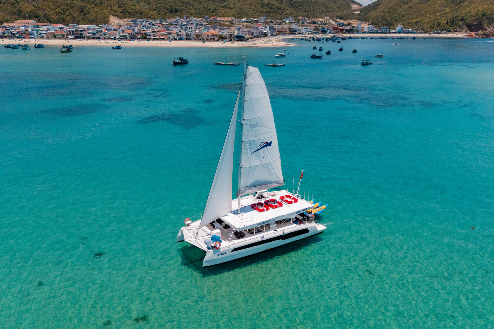

Sailing Catamaran 1360 – Coral II is a spacious catamaran for private charters around Phu Quoc. Its stable twin hulls, wide open deck and smart layout make it comfortable for trips with family and friends, celebrations and special occasions.
Built in 2021, this 13.6 m catamaran combines stability on the water with lots of outdoor space to relax. Lounge on deck, feel the sea breeze, watch the coastline or gather around the big dining table throughout the trip.
Coral II takes up to 28 guests — great for big groups, yet still comfortable thanks to its open design. Move easily between areas on board: sunbathe, rest in the shaded zone or share a meal with the whole crew.
On a private charter you can swim in the tropical waters around Phu Quoc, snorkel, fish, paddle a SUP or have fun on the onboard water slide. Meals, drinks and water-sports gear are all prepared so you can fully enjoy your time on the water.
Coral II is perfect if you're looking for a private yacht in Phu Quoc for a big group and an easy day at sea — from family trips, birthday parties and group events to sunset afternoons.
Programme
HALF-DAY CRUISE | 5 HOURS
Pick a private morning or late-afternoon trip along the Phu Quoc coast. Swim and snorkel, relax on the wide deck, try water activities and share a meal with family and friends. On the afternoon trip you also get to watch the sunset over the sea and the island coastline.
FULL-DAY CRUISE | 10 HOURS
A full day at sea with an itinerary shaped around your group and the weather. Combine swimming, snorkeling, fishing, SUP and chilling on board while exploring the southern waters of Phu Quoc and nearby islets.
Custom sea itinerary
Want a different route or planning a special occasion? The Theia Yachting team can design a private cruise around Phu Quoc based on your date, group size and wishes. Contact us to choose the right itinerary and book your private yacht.
Specifications
- Year built
- 2021
- Builder
- TVD
- Length
- 13.6 m
- Beam
- 6.9 m
- Draft
- 1.4 m
- Capacity
- Up to 28 guests
- Charter type
- Day charter
Highlights
- Spacious open deck
- Comfortable outdoor dining area
- Stable twin-hull catamaran design
- Open sea views
- Shaded outdoor area
- Easy access to the water
- Great for swimming and snorkeling
- SUP paddleboarding
- Fishing gear
- Onboard water slide
- Comfortable space for groups of up to 28 guests
- Perfect for private cruises around Phu Quoc
Included
- Round-trip hotel transfer
- Welcome drinks
- Food and drinks on board
- Fresh seasonal fruit
- Towels
- Snorkeling gear
- SUP paddleboarding
- Fishing gear
- Inflatable water slide
- Fireworks (evening tour)
Location · Phu Quoc, Vietnam
See Phu Quoc from a different angle aboard Sailing Catamaran 1360 – Coral II.
Cruise along the island's southern waters, visit nearby islets or simply enjoy a day at sea with swimming, snorkeling, fishing and relaxing on the spacious deck.
With its open space and large capacity, Coral II is ideal for groups who want to charter a whole private yacht in Phu Quoc — family trips, anniversaries, group events, sunset cruises or a private day off at sea.


More yachts

Phu QuocSailing Catamaran 1580 – Onyx
Luxury Sailing Catamaran 1580 – Onyx delivers a super comfortable private charter around Phu Quoc, with generous space, modern design and attentive service for a fully relaxing day at sea.
 Phu Quoc
Phu QuocCatamaran Lagoon 450F – Azure
Lagoon 450 F – Azure is a spacious, elegant sailing catamaran made for private cruises around Phu Quoc.
 Nha Trang
Nha TrangMotor Yacht Merry Fisher 795 – Jade
Motor Yacht Merry Fisher 795 – Jade is a great fit if you love small, private trips and want to enjoy a day at sea in the most relaxed way.